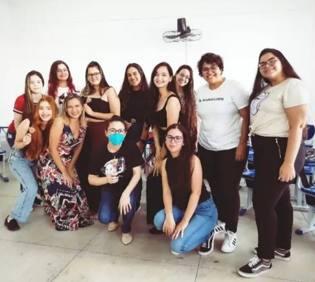

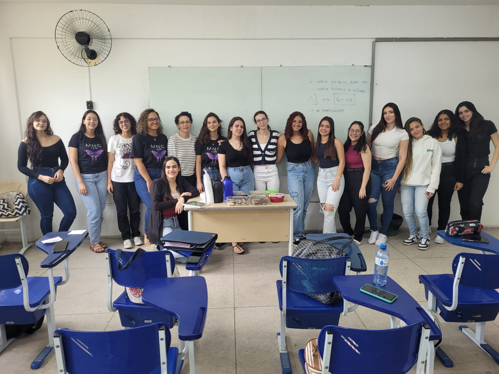
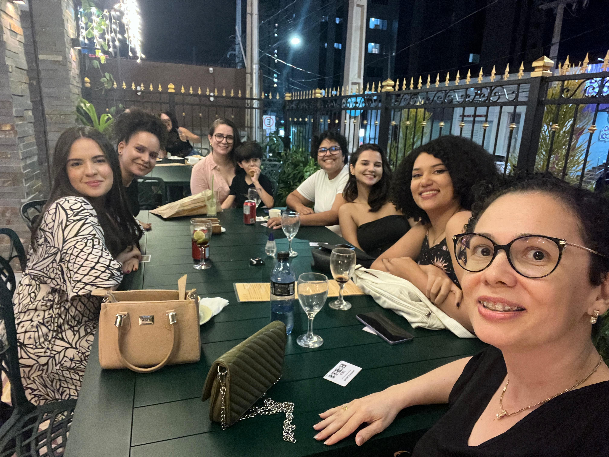
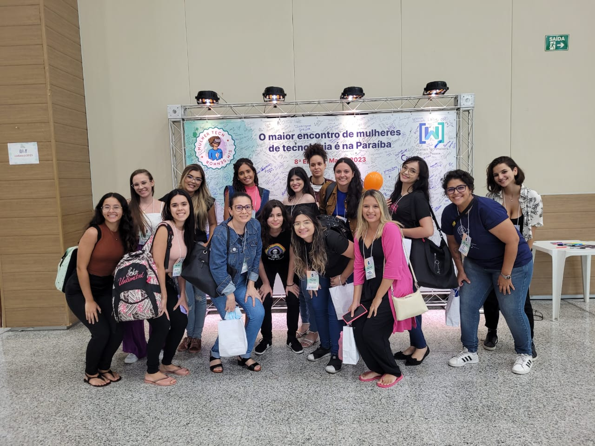

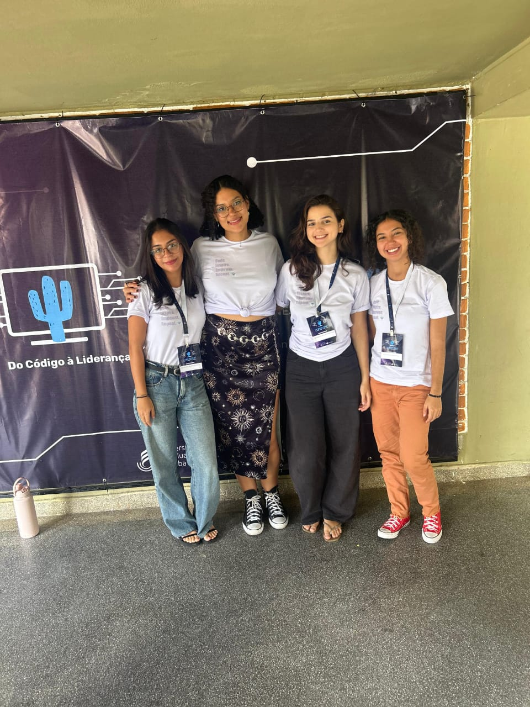

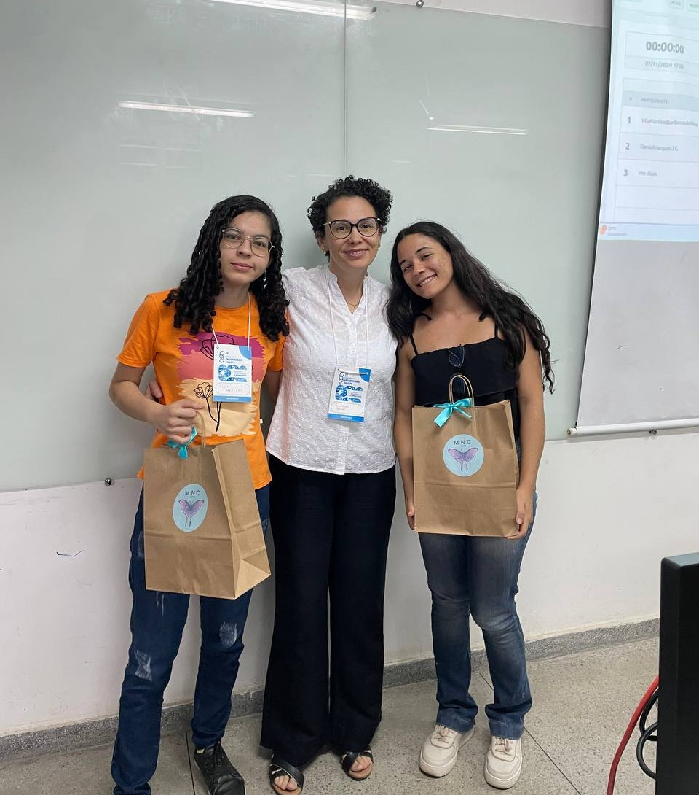
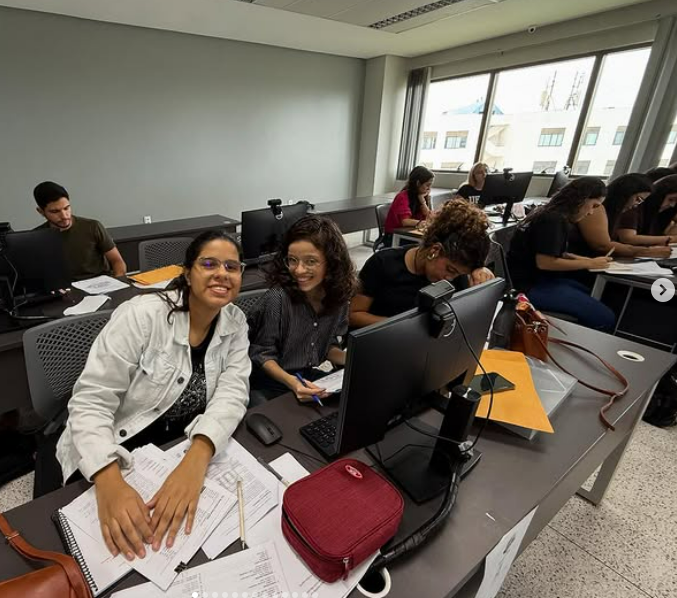


Desafios no desenvolvimento do cálculo mental, reconhecimento de diferentes valores e valor posicional dos algarismos.
Dificuldade em progredir para tópicos mais complexos.
Intervenção com materiais manipuláveis, junto com software educacional GCompris e pilares do Pensamento Computacional.
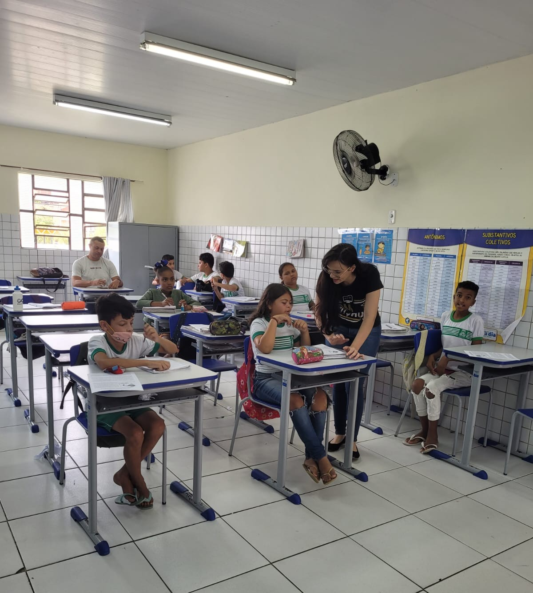

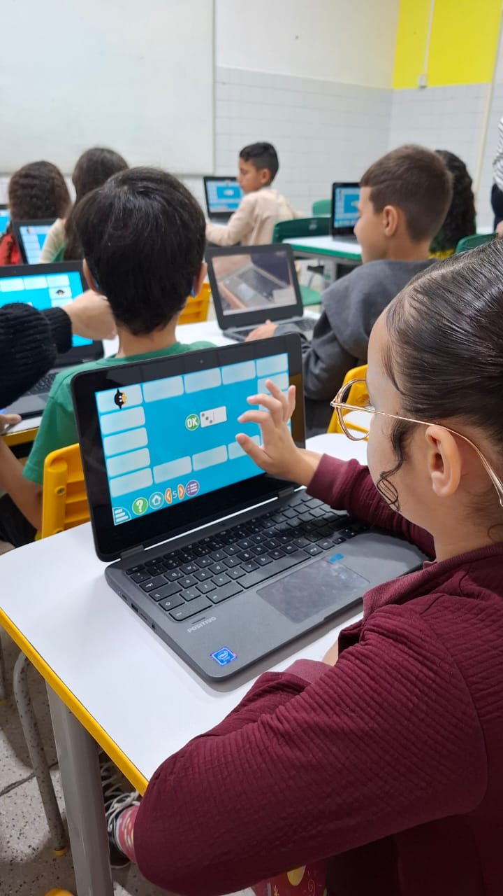
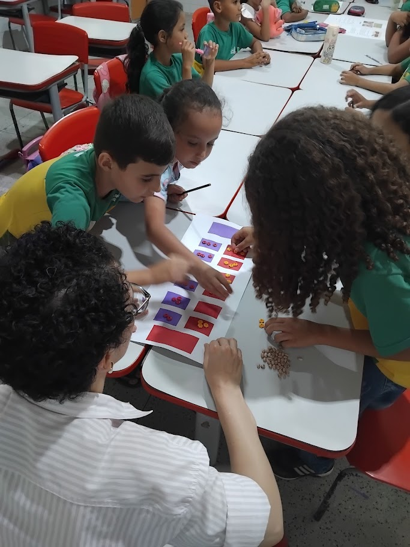
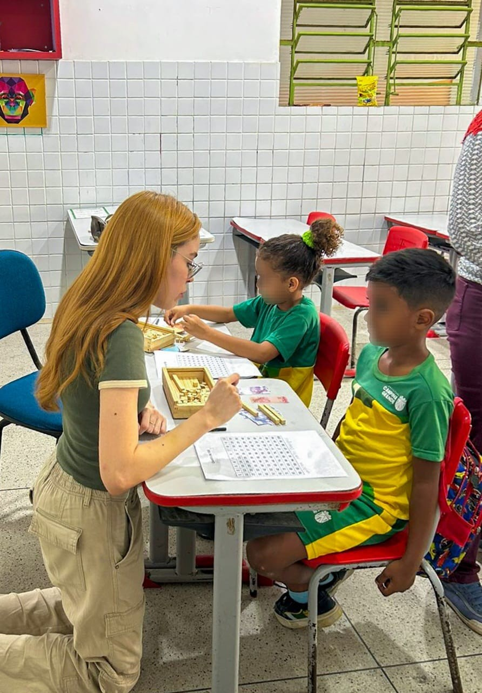
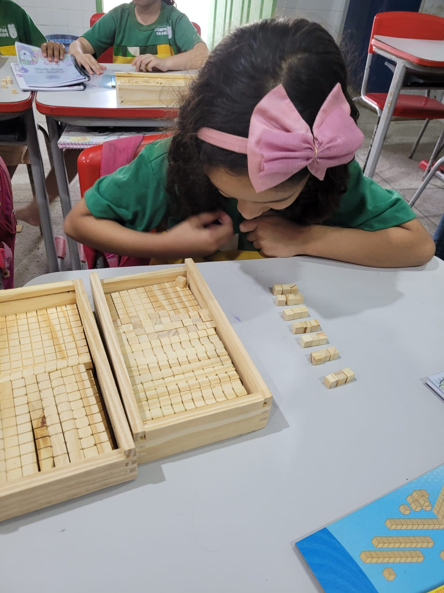